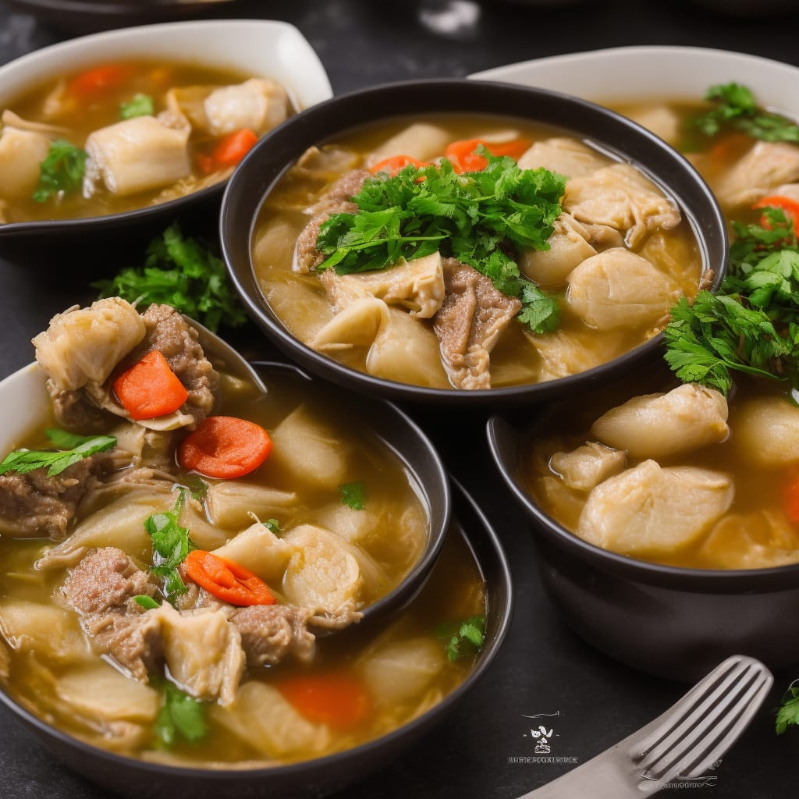

Sinigang na Baka

Description
Sinigang na baka is a classic Filipino soup known for its savory and
tangy broth infused with tamarind. Tender chunks of beef simmered with
a medley of vegetables such as radish, eggplant, and green beans create
a hearty and flavorful dish. Its distinctive sourness, balanced by a
hint of sweetness, makes it a beloved comfort food enjoyed across the
Philippines. Best served piping hot with steamed rice, it offers a
delightful blend of flavors that capture the essence of Filipino culinary
tradition.
Sautéeing in onion, garlic, fish sauce, and tomato, offers
a robust twist on the traditional Filipino soup. The beef is cooked to
tender perfection in a savory broth infused with the tang of tamarind,
balanced by the sweetness of tomatoes. This flavorful rendition combines
rich umami notes with the classic sourness of sinigang, creating a hearty
and satisfying dish that pairs wonderfully with steamed rice.
Ingredients
- 500g beef (preferably ribs or shank), cut into serving pieces
- 1 medium onion, quartered
- 2 tomatoes, quartered
- 2 cloves, minced
- 1 thumb-sized piece of ginger, sliced
- 1 medium daikon radish (labanos), peeled and sliced
- 1 medium eggplant, sliced
- 1 bunch kangkong (water spinach) or other leafy greens
- 2-3 pieces green chili peppers (siling haba), optional
- 1 packet (about 40g) sinigang mix or tamarind paste
- Fish sauce and salt, to taste
- Water
- Cooking oil
Instructions
- In a large pot, heat some cooking oil over medium heat. Sauté
the onion, garlic, and tomatoes until softened and aromatic.
Add 2 tablespoon of fish sauce.
- Add the beef pieces and cook until lightly browned.
- Pour enough water to cover the meat (about 8-10 cups). Bring to a
boil, then lower the heat to simmer. Cover and cook until the beef
is tender, about 1.5 to 2 hours. Skim off any scum that rises to the
surface.
- Once the beef is tender, add the sinigang mix and stir to dissolve.
Adjust the sourness according to your preference by adding more
sinigang mix or tamarind paste.
- Add the daikon radish and simmer for about 5-10 minutes until
slightly softened.
- Add the eggplant and cook for another 5 minutes or until tender.
- Add the kangkong (or other leafy greens) and green chili peppers
(if using). Cook for a few more minutes until the greens are wilted.
- Season with fish sauce or salt to taste.
- Serve hot with steamed rice. Enjoy your sinigang na baka!
Note: You can adjust the amount of water depending on
how soupy you want your sinigang to be. Some people prefer it more brothy,
while others prefer it thicker. Adjust the cooking time as needed to ensure
the beef is tender.